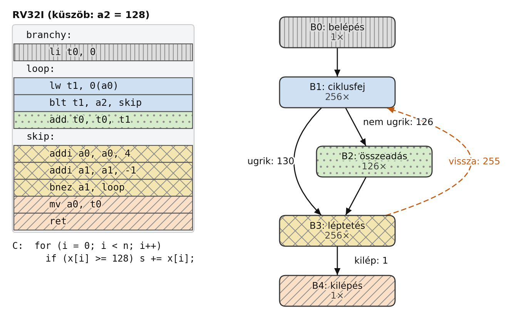

A branchy kernel egy tömb küszöböt elérő elemeit adja
össze. A könyv RISC-V értelmezőjén 256 elemre, 128-as küszöbbel a teljes
program 1420 utasítást hajt végre, akár rendezett, akár véletlen
sorrendű az adat. Valódi gépen mégsem mindegy a sorrend. A labor
i5-13400F processzorának egyik nagy magján,
elemre, vektorizálás nélküli fordítással (2026-11-25,
figures/data/ca033-rendezett-tomb.csv) a feltételes ugrást
tartalmazó változat rendezett adaton 0,22 ns, véletlen adaton 3,13 ns
alatt dolgoz fel egy elemet, vagyis azonos kód és utasításszám mellett
körülbelül tizennégyszeres a különbség. A maszkolásos, adatfüggő ugrás
nélküli változat mindkét esetben 0,22 ns körül marad.
A miértet Statikus becslés és a kétbites
számláló adja meg. Ehhez előbb meg kell ismernünk a vezérlésátadó
utasításokat: hogyan lesz if, ciklus, switch
és függvényhívás a gépi kódból, és melyik változat teszi nehézzé a
processzor dolgát.
A program végrehajtása alapesetben egyenes vonal: a következő
utasítás a pc + 4 címen van. A
vezérlésátadás (control transfer) más értéket ír a
pc-be. Két fajtája van: a feltételes
elágazás csak akkor ugrik, ha egy feltétel teljesül, a
feltétlen ugrás mindig.
A programot érdemes alapblokkokra bontani: az
alapblokk olyan utasítássorozat, amelybe csak az elején lehet belépni,
és csak a végén lehet kilépni belőle. A blokkok és a köztük vezető élek
alkotják a vezérlési folyamgráfot (control-flow graph).
Az ábra a branchy kernel gráfját mutatja a 256 elemes,
véletlen adaton mért végrehajtási számokkal. Figyeld meg, hogy a
B1 blokk minden elemre lefut (256-szor), de a
B2 összeadás csak 126-szor, ennyi elem éri el a küszöböt; a
visszafelé mutató szaggatott él a ciklust záró ugrás.

branchy kernel RV32I-kódja és vezérlési
folyamgráfja (256 elem, küszöb 128)| Utasítás | Ugrik, ha | Értelmezés |
|---|---|---|
beq rs1, rs2, cél |
egyenlő | |
bne |
nem egyenlő | |
blt / bge |
/ | előjeles |
bltu / bgeu |
/ | előjel nélküli |
Az elágazás maga hasonlít össze két regisztert, mert
jelzőbit-regiszter nincs (Aritmetika, logika,
betöltés és tárolás). A „nagyobb” és „kisebb vagy egyenlő” alak
hiányzik: az assembler a bgt a, b pszeudoutasításból
operanduscserével blt b, a-t készít, a beqz,
bnez és társaik pedig a zero regiszterrel
hasonlítanak.
Definíció. A PC-relatív ugrás célja az utasítás saját címéhez képest adott:
A B formátum eltolása 13 bites, páros, tehát
bájt (±4 KiB). Ha a cél ennél messzebb van, a feltételt megfordítjuk, és
egy rövid elágazás egy távoli ugrást ugrik át. A PC-relatív cél haszna,
hogy a kód áthelyezve is működik, és hogy a cél már az utasításból és a
pc-ből kiszámítható, regiszter olvasása nélkül.
| Utasítás | Hatás | Hatókör |
|---|---|---|
jal rd, cél |
rd = pc + 4, pc = pc + imm |
±1 MiB (21 bites eltolás) |
jalr rd, imm(rs1) |
rd = pc + 4, pc = (rs1 + imm) a 0. bit
törlésével |
bármely cím |
A j cél a jal zero, cél (a visszatérési cím
eldobva). A függvényhívás a call f, vagyis
jal ra, f: a ra megjegyzi, honnan jöttünk. A
visszatérés a ret, azaz
jalr zero, 0(ra): ugrás a ra-ban tárolt címre.
Ha a cél 1 MiB-nél messzebb van, auipc + jalr
pár éri el a teljes 32 bites címteret.
Definíció. Közvetlen (direct) az
ugrás, ha a célja az utasításból és a pc-ből kiszámítható
(jal, B formátum). Közvetett (indirect),
ha a cél egy regiszterből jön (jalr), ezért csak a
regiszter értékének ismeretében derül ki.
Ez a hardver szempontjából döntő különbség. A közvetlen ugrás célját
a processzor a dekódoláskor tudja, a közvetett célja (virtuális
függvény, függvénymutató, switch-tábla, visszatérés) talán
egy lassú betöltés eredménye. A ret is közvetett, de
szabályos: mindig oda tér vissza, ahonnan hívtak.
Továbbvitt eredmény. Közvetett ugrás és visszatérés:
a jalr célja regiszterből származik, ezért futás közben
derül ki; a ret a ra-n át tér vissza. Erre
épít a Célcím-becslés: BTB, RAS, közvetett ugrások
és a front-end (cél- és visszatérésicím-becslés) és a Spectre és Meltdown (a becsült cél
eltérítése).
Továbbvitt eredmény. A vezérlésátadások kódolása: B
formátum (±4 KiB), jal (J formátum, ±1 MiB),
jalr (I formátum); a céleltolás mindig a saját
pc-hez képest értendő, a visszatérési cím
pc + 4. Erre épít a Kódolás bitszinten
és egy RISC-V-értelmező, a Vezérlőegység és
vezérlőjelek és a Vezérlési hazárdok és
kivételek a futószalagban.
Az if úgy fordul, hogy a feltétel
tagadásával átugorjuk a törzset:
if (a < b) s = s + a; → bge a, b, skip, a
törzs, majd a skip: címke. Az if–else ágai
közé egy j end kerül, hogy az első ág ne fusson bele a
másodikba.
Ciklusnál két alak lehetséges. A „feltétel elöl” változat minden
körben egy feltételes ugrást és egy visszaugrást (j) hajt
végre; a „feltétel hátul” változat egyetlen ugrást: a végén álló
elágazás egyben a visszaugrás. Mivel a nulla körös esetet is kezelni
kell, a ciklus elé egy egyszeri őrfeltétel kerül:
beqz a1, done # őr: üres tömb
loop:
lw t1, 0(a0)
add t0, t0, t1
addi a0, a0, 4
addi a1, a1, -1
bnez a1, loop # feltétel hátul
done:A fordítók ezt az átalakítást rutinszerűen elvégzik. Tovább csökkenthető a vezérlés aránya a ciklusgörgetéssel (loop unrolling): a törzs több példánya egy körben, egy feltétellel; ezt az ILP, függőségek és statikus ütemezés tárgyalja.
A switch két alapvető fordítása:
beq
vizsgálja a konstansokat. Egy véletlen eset eléréséhez átlagosan a
konstansok felét kell végigvizsgálni, az utasításszám lineárisan nő az
esetek számával.tábla + 4·k címet, betölti, és közvetett
ugrással odamegy. Az utasításszám állandó. li t0, 6
bgeu a0, t0, def # k >= 6, vagy negatív (előjel nélkül hatalmas)
slli t1, a0, 2
la t2, tab
add t2, t2, t1
lw t2, 0(t2) # t2 = tab[k]
jr t2 # közvetett ugrásFigyeld meg a bgeu trükköt: egyetlen előjel
nélküli összehasonlítás kiszűri a negatív értékeket is, mert
bitmintájuk előjel nélkül
-nél
nagyobb. Az ábra hat esetre mutatja a két változatot:
-ra
a lánc 9, a tábla 10 utasítást hajt végre.
switch két fordítása hat esetre, a
értékre végrehajtott sorok kiemelveA fordító az esetek száma és sűrűsége alapján dönt; ritka konstansokra gyakran bináris keresést épít (ez fordítófüggő, A fordító kimenete: C-ből assembly). Az utasításszám nem minden: az ugrótábla egy memória-hozzáférést és egy nehezen becsülhető közvetett ugrást hoz magával.
A call f a visszatérési címet ra-ba teszi,
f végén a ret visszaugrik. Ha f
maga is hív, a ra felülíródik, ezért előbb el kell menteni
a verembe; ezt a Hívási konvenció, verem és
veremkeret mutatja be.
Rövid törzsnél az ugrás kiváltható maszkolással: a
feltételből 0 vagy csupa egyes bitmintát készítünk, és ezzel szűrjük az
operandust. A branchy maszkos törzse:
slt t2, t1, a2 # t2 = 1, ha x[i] < küszöb
addi t2, t2, -1 # 0, ha kisebb; különben 0xFFFFFFFF
and t1, t1, t2 # t1 = x[i] vagy 0
add t0, t0, t1 # feltétel nélkül összeadunkAz utasításfolyam az adattól független: minden elemre ugyanaz a nyolc
utasítás fut. Ugyanezzel a mintával korlátozható egy index is:
sltu t0, a0, a1, majd neg t0, t0 és
and a0, a0, t0 a tartományon kívüli indexet nullára
kényszeríti úgy, hogy nincs elágazás, amelyet rosszul lehetne
megjósolni.
Továbbvitt eredmény. Elágazásmentes minta:
összehasonlítás (slt/sltu) → maszk
(addi -1 vagy neg) → and. Erre
épít a Statikus becslés és a kétbites számláló
(mikor éri meg) és a Spectre és Meltdown
(indexmaszkolás védekezésként).
Eltolások. A branchy program listáján
(a Kód első blokkja kiírja a két sort) a blt t1, a2, skip a
0x34 címen áll, a skip címke a
0x3c címen. Az eltolás
bájt (két utasítás). A bnez a1, loop a 0x44
címen, a loop a 0x30 címen:
bájt. A negatív eltolás visszaugrás. Mindkettő bőven a ±4 KiB
tartományon belül van.
Utasításszám. A kernel egy elemre: lw,
blt, addi, addi,
bnez, ez 5 utasítás, plusz egy add, ha az elem
eléri a küszöböt. 256 elemből 126 éri el. A kernel a li
kezdéssel és a mv, ret zárással:
.
A main további 11 utasítást fut, összesen
.
A maszkos változatban elemenként 8 utasítás fut:
.
Több utasítás, mégis gyorsabb lehet, ha az ugrás rosszul jósolható; az
ítéletet a processzor hozza meg.
switch. A láncban a
-adik
eset
()
beqz-vel indul,
darab li + beq pár következik, majd a
li + ret ág:
utasítás,
-ra
9. A táblás változat minden érvényes
-ra
10.
Az utasításszámot a küszöb változtatja, a sorrend nem.
import sys; sys.path.insert(0, "code")
from archkit import perf, riscv, trace
for ordered in (False, True):
data = riscv.branchy_data(256, seed=1, ordered=ordered)
counts = [len(riscv.run(riscv.branchy_src(data, t)).trace) for t in (0, 128, 256)]
bl = len(riscv.run(riscv.branchy_src(data, branchless=True)).trace)
print(f"rendezett={ordered!s:<5} küszöb 0/128/256: {counts} maszkos: {bl}")
listing = riscv.assemble(riscv.branchy_src(data)).listing().split("\n")
print("\n".join(line for line in listing if "blt" in line or "bnez" in line))
meta, rows = perf.read_bench_csv("figures/data/ca033-rendezett-tomb.csv")
for r in rows:
if (r["build"], r["core"]) == ("novec", "P") and r["variant"] != "plain" \
and r["pattern"] in ("sorted", "random"):
print(f"mért x86 {r['variant']:<11}{r['pattern']:<7} "
f"{r['median_ns_per_elem']:.2f} ns/elem")rendezett=False küszöb 0/128/256: [1550, 1420, 1294] maszkos: 2062
rendezett=True küszöb 0/128/256: [1550, 1420, 1294] maszkos: 2062
00000034 00c34463 blt t1, a2, skip
00000044 fe0596e3 bnez a1, loop
mért x86 branch sorted 0.22 ns/elem
mért x86 branchless sorted 0.22 ns/elem
mért x86 branch random 3.13 ns/elem
mért x86 branchless random 0.22 ns/elemA mért idők a bench_branchy C++ programból valók
(-O2 -fno-tree-vectorize): az elágazásos változat
assemblyjében a feltétel cmp + jl, a maszkosat
a g++ 15.2 cmov utasításra fordította (ezt az assemblyt a
fejezet írásakor ellenőriztük). A két ciklusalak és a
switch két változatának utasításszáma:
loop_end = [" beqz a1, done", "loop:", " lw t1, 0(a0)", " add t0, t0, t1",
" addi a0, a0, 4", " addi a1, a1, -1", " bnez a1, loop", "done:"]
loop_top = ["loop:", " beqz a1, done"] + loop_end[2:6] + [" j loop", "done:"]
for name, body in [("feltétel elöl", loop_top), ("feltétel hátul", loop_end)]:
src = ".data\nx: .zero 256\n.text\n la a0, x\n li a1, 64\n" + "\n".join(body)
print(f"{name:<15} {len(riscv.run(src).trace)} utasítás 64 körre")
def switch_src(n, table):
arms = "".join(f"c{k}:\n li a0, {k}\n ret\n" for k in range(n)) + "def:\n li a0, -1\n ret\n"
if not table:
tests = "".join(f" li t0, {k}\n beq a0, t0, c{k}\n" for k in range(1, n))
return " beqz a0, c0\n" + tests + " j def\n" + arms
cases = ", ".join(f"c{k}" for k in range(n))
return (f".data\ntab: .word {cases}\n.text\n li t0, {n}\n bgeu a0, t0, def\n"
" slli t1, a0, 2\n la t2, tab\n add t2, t2, t1\n lw t2, 0(t2)\n jr t2\n" + arms)
print("esetek lánc átlag lánc max tábla")
for n in (4, 8, 16, 64):
res = {t: [len(riscv.run(switch_src(n, t), {"a0": k}).trace) for k in range(n)]
for t in (False, True)}
print(f"{n:>6} {sum(res[False]) / n:>12.1f} {max(res[False]):>9} {max(res[True]):>6}")feltétel elöl 388 utasítás 64 körre
feltétel hátul 324 utasítás 64 körre
esetek lánc átlag lánc max tábla
4 6.0 9 10
8 10.0 17 10
16 18.0 33 10
64 66.0 129 10A hátul lévő feltétel körönként egy utasítást spórol (a
j loop-ot). A lánc átlaga
,
a tábláé mindig 10: nyolc esetnél egyenlők, felette a tábla nyer az
utasításszámban.
lw t2, 0(t2) sor lefut: figyeld
meg, melyik táblabejegyzés lesz sárga.for n in (4, 8, 16, 64) sorába
vedd fel a 256-ot is. Mekkora a lánc átlaga, és mennyi a tábláé?Előjeles és előjel nélküli összehasonlítás keverése.
Tünet: egy negatív index átjut a blt a0, t0
határvizsgálaton, és a program idegen memóriát olvas. Ok:
blt szerint a
kisebb, mint 6. Javítás: indexhatárhoz
bgeu/bltu (az előjel nélküli összehasonlítás a
negatívat is kiszűri).
Hiányzó j az if–else
között. Tünet: mindkét ág lefut, és a második
felülírja az elsőt. Ok: az első ág belefut a másodikba.
Javítás: az első ág végére j end.
Beágyazott hívás mentés nélkül. Tünet: a
külső függvény a ret-nél végtelen ciklusba kerül vagy rossz
helyre tér vissza. Ok: a belső call felülírta a
ra-t. Javítás: a ra-t verembe menteni
a hívás előtt.
Túl messze lévő elágazás-cél. Tünet: az
assembler azt jelzi, hogy az eltolás nem ábrázolható. Ok: a B
formátum ±4 KiB. Javítás: fordított feltétellel ugorni át egy
j-t, vagy rövidíteni a törzset.
bgt a0, a1, cél?jal és a B formátumú elágazás hatóköre?bgeu a switch
tartományellenőrzéséhez?if (a0 == 0) a1 = 1; else a1 = 2;.beq a 0x100 címen
áll, célja a 0x0E0. Mekkora az eltolás, és
ábrázolható-e?a0 címtől
a1 darab szót nulláz, a feltétellel a végén! Hány utasítás
fut a1 = 10 esetén?a0-ba az a0 és a1 előjeles
minimumát teszi!archkit.riscv
értelmezőn, és számláld meg az utasításait!A feltételes elágazás két regisztert hasonlít össze, és PC-relatív
célra ugrik ±4 KiB-on belül; a jal ±1 MiB-ot ér el, a
jalr regiszterből veszi a célt. A hívás
jal ra, a visszatérés jalr zero, 0(ra). A
közvetlen cél a dekódoláskor ismert, a közvetett (visszatérés,
függvénymutató, ugrótábla) csak futás közben. Az if a
tagadott feltétellel ugorja át a törzset; a feltételt a ciklus végén
tartó alak körönként egy ugrást spórol. A switch
összehasonlítás-lánc vagy ugrótábla: az utóbbi állandó utasításszámú, de
memóriát olvas és közvetett ugrást használ. Az slt → maszk
→ and mintával az elágazás kiváltható, indexhatár is
érvényesíthető.
blt a1, a0, cél.jal: ±1 MiB; B formátum: ±4 KiB.pc-ből már
dekódoláskor kiszámítható; a közvetett egy regiszter értékétől függ,
amely még nem biztos, hogy elkészült.j is kell.bgeu k, 6 egyszerre szűri a túl nagy és a negatív
értékeket.1. A feltétel tagadásával ugorjuk át az első ágat:
bnez a0, other
li a1, 1
j end
other:
li a1, 2
end:2. bájt. Páros és a tartományban van, ábrázolható.
3.
beqz a1, done
loop:
sw zero, 0(a0)
addi a0, a0, 4
addi a1, a1, -1
bnez a1, loop
done:esetén utasítás.
4. Maszk: t0 =
,
ha
,
különben 0. Ekkor
:
slt t0, a0, a1
neg t0, t0
xor t1, a0, a1
and t1, t1, t0
xor a0, a1, t15. , ha . A valódi gépen a betöltés cache-hibát okozhat, a közvetett ugrás célja pedig nehezebben becsülhető, mint a lánc ugrásai (ha például egy eset sokkal gyakoribb, a lánc elején tartva nagyon olcsó); a sorrend és az eloszlás is számít.
6.
import random
MIN = "slt t0, a0, a1\nneg t0, t0\nxor t1, a0, a1\nand t1, t1, t0\nxor a0, a1, t1"
rng = random.Random(18)
for _ in range(10_000):
a, b = rng.randrange(-2**31, 2**31), rng.randrange(-2**31, 2**31)
m = riscv.run(MIN, regs={"a0": a, "a1": b})
assert m.reg("a0") == min(a, b)
print(f"10000 pár rendben, {len(m.trace)} utasítás, ugrás nélkül:",
"br" not in trace.mix(m.trace))10000 pár rendben, 5 utasítás, ugrás nélkül: True